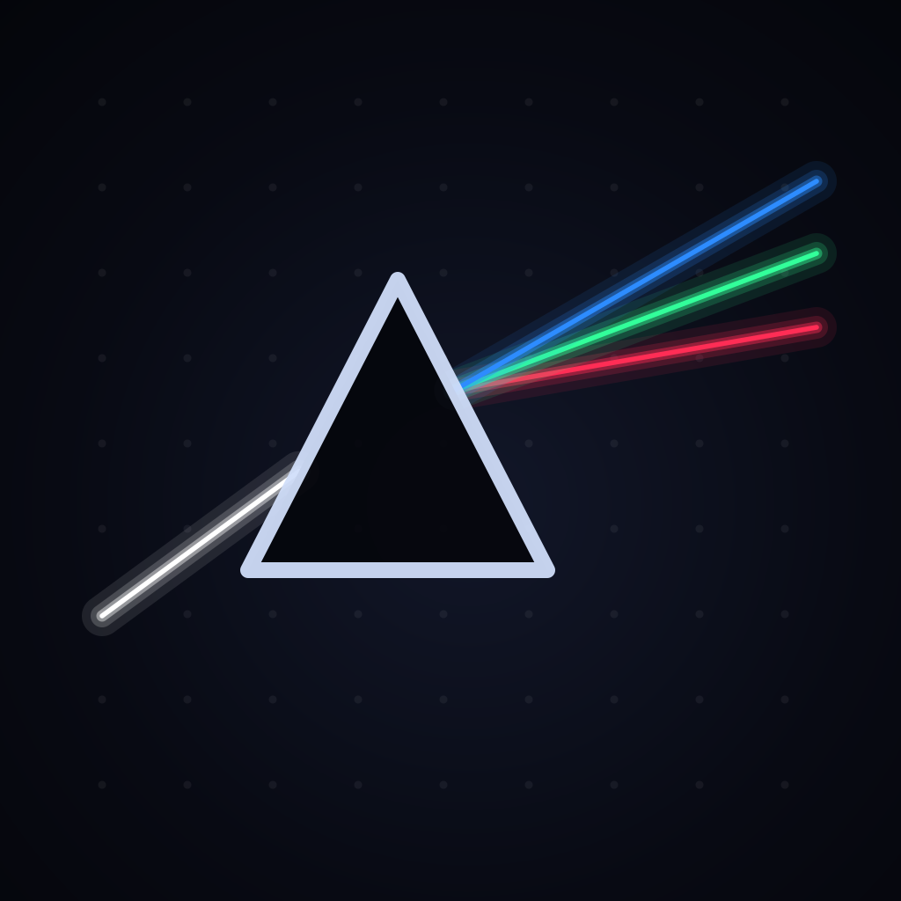
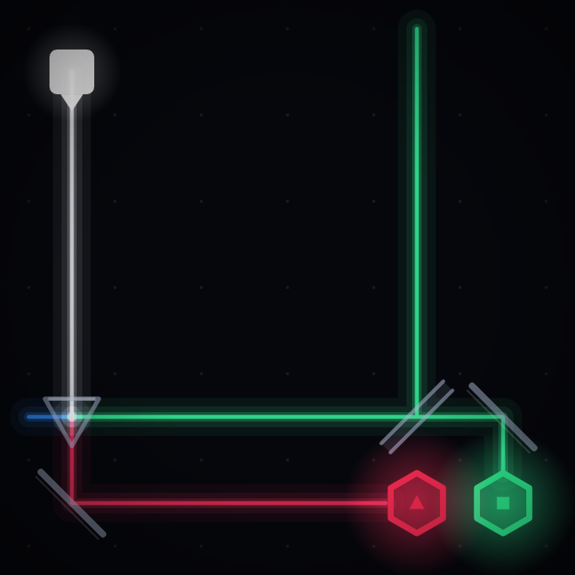
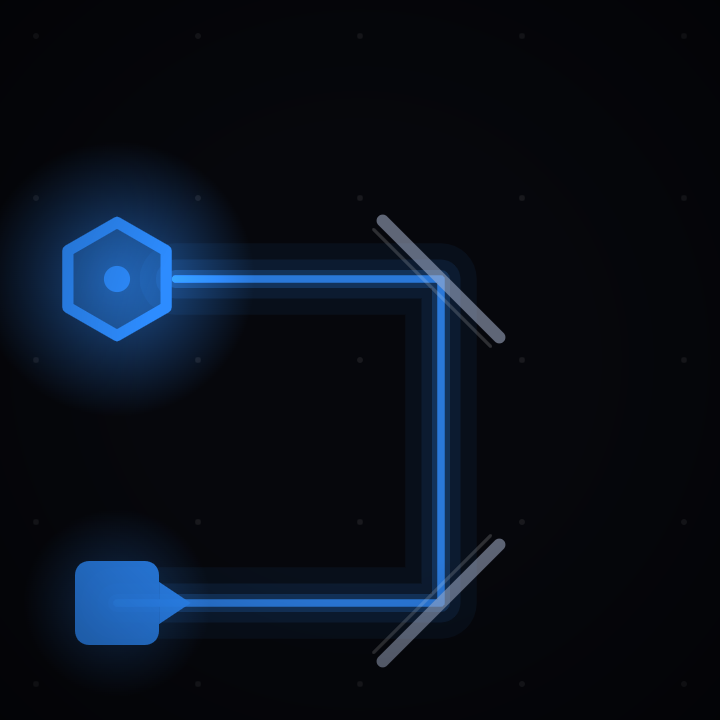
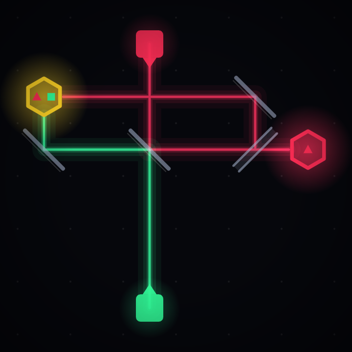

PRISM
Bend beams. Wake the crystals.
Get it on the App Store
Thirty seconds and you know the game
Real gameplay. No sound.
There is only one rule
Tap a piece and it turns 90°; the light finds a new path instantly. Light every crystal with exactly the color it asks for, all at once, and the board is solved. That is the only rule, and there is no manual — the levels teach it.

- 240 puzzles across six chapters
- Every puzzle has exactly one solution
- The par shown is the true minimum, found by exhaustive search
- No ads · no in-app purchases · no account
- No networking at all. Fully offline
Six chapters
The levels teach optics in order. Each chapter introduces exactly one new piece.
- Reflect — a mirror turns light by 90 degrees
- Split — a half-silvered mirror passes light and reflects it at the same time
- Disperse — a prism splits white light into red, green and blue
- Mix — two beams meeting at one crystal make a new color
- Refine — a filter keeps only the component you want
- Converge — everything you have learned meets on one board
Real optics
The angle of reflection, dispersion through a prism, and additive color mixing are real physics. Each chapter opens a principle card that shows the board before and after a single tap, side by side, written so a child can follow it. Where the game simplifies real physics, we say so.
Playable without seeing color
Every crystal also shows its required color as a shape, and mixed colors show their component shapes side by side — a yellow crystal carries a triangle and a square together. All 240 puzzles can be finished without distinguishing color.
- red = triangle
- green = square
- blue = circle

- Text size can be set to normal, large or extra large
- Turning on Reduce Motion cuts down the effects
- A tap that misses a piece by a little still rotates the nearest one
Four languages
Korean, English, Japanese and Simplified Chinese. Follows your device language, or pick one in Settings.
Questions people ask
- Are there really no ads?
- None. No in-app purchases, no account, no sign-in either. One purchase opens all 240 puzzles from the start. If you were looking for a puzzle game with no ads, that is why this one exists.
- Does it work without internet?
- Yes. It does no networking at all — fully offline. It works on a plane, underground, anywhere with no signal. Your progress is stored only on this device and is never sent anywhere.
- Can I play if I am colorblind?
- Yes. Every crystal carries its required color as a shape as well (red is a triangle, green a square, blue a circle), so all 240 puzzles can be finished without distinguishing color at all.
- How many levels, and how hard?
- Six chapters, 240 boards. Every board has exactly one solution, so nothing is solved by luck, and if you are stuck there is always a reason. The par shown is the true minimum, proven by exhaustive search.
- Is there an Android version?
- A Google Play release is in preparation. For now it is available on iOS only.
- How big is it?
- Under 5 MB. There is not a single image file in the app — every beam and shape is drawn in code.